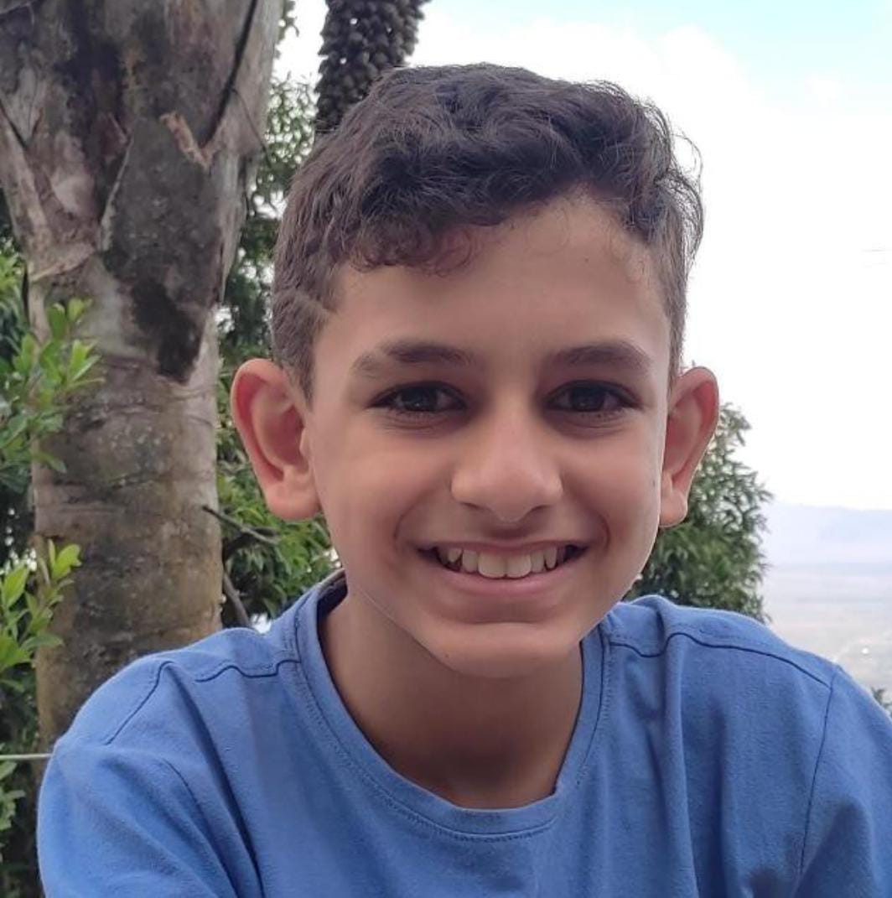

Sobre mim
oi eu sou o pedro cesar, sou o criador desse portifólio, tenho 13 anos fiz esse portifólio como TCC do meu curso de programação na Super Geeks e esse que esta na foto ao lado sou eu e você vai poder me conhecer por meio desse portifólio. Nesse portifólio vocês vão seber os esportes que eu gosto, coisas que eu goto de fazer e estudar e sobre oque eu quero fazer no meu futuro



Meu instagram e telefone: